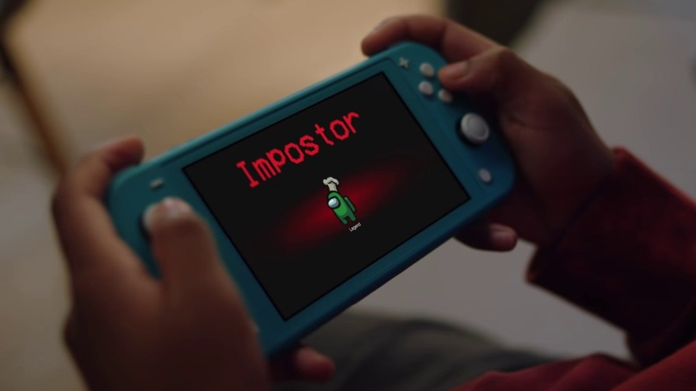

How to play Among Us:
- To control your character, it’s either keyboard and mouse or just mouse, while everyone’s speed can be adjusted by the host. What you choose is just personal preference.
- You will not know if you are a crewmate or Impostor until the game starts.
- On phones, there is an analog stick touchpad for moving.
- To do tasks, you need to walk to the correct room and either click the object directly or click the ‘Use’ button in the bottom right corner. From there, each task is fairly self-explanatory.
- If you find a dead body, you can click ‘Report’ in the bottom right corner. This will call a team meeting, where you can discuss where you found the body, discover if anyone else was killed, and share your suspicions. You do not have to report a body if you see one, though.
- You can also call an emergency meeting from a button in the middle of the map.
- After the discussions, you vote. You can elect to skip a vote. If skipping has the most votes or there is a tie, nobody will be ejected.
- To win the game, you must complete all tasks before the Impostor kills the crew.
- Once you are killed, you can continue to complete tasks as a ghost to help your team, but you cannot communicate.
Source from
IGN.